December 2024
Hi, everyone,
Mark and I hope that you have been well and had a great year in 2024, and we wish you the best for 2025.
This year had a much-anticipated event - the total solar eclipse. We started planning to see this year's eclipse seven years ago (!), after seeing the eclipse in 2017, and in April we drove to Indiana and enjoyed watching it with my brother and sister-in-law Jim and Dixie a few blocks from their home.
| 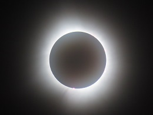 | 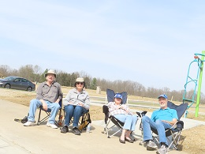 |
In the summer Mark and I traveled to England, returning to air travel for the first time since the covid pandemic, in order to participate in a conference in honor of a frequent research collaborator. We took two weeks of vacation as well, and spent much of our time walking around fascinating historical sites from many eras - neolithic barrows, iron age hillforts, roman roads and ruins, and monastery and castle ruins.
| 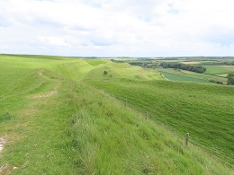 | 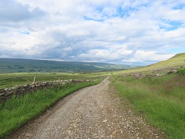 | 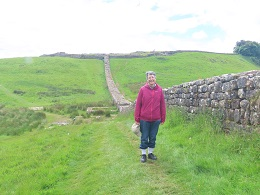 |
| 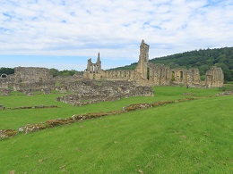 | 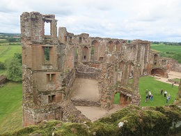 |
The pictures above are:
Maiden Castle hillfort with many layers of hill/ditch ramparts,
the Cam High Roman road in the Yorkshire dales,
Hadrian's wall with a "milecastle" behind me, and Housesteads Roman fort
at the top of the hill,
Byland Abbey - our favorite ruined abbey (among many!),
and
Kenilworth Castle - another favorite ruin.
As usual, we also spent a lot of time in our travels looking at birds along the way ...
| 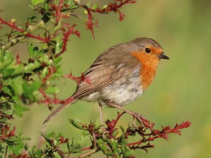 | 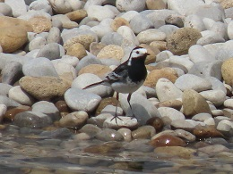 | 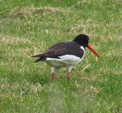 |
| 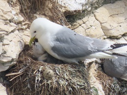 | 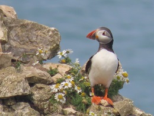 | 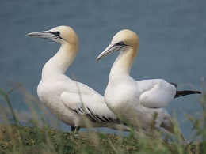 |
... as well as many beautiful wildflowers. The names of these birds - European robin, white (pied) wagtail, oystercatcher, kittiwake (with baby), Atlantic puffin, and northern gannets - were already familiar to us, but it's been fun over this winter break to go through our pictures from 2024 and learn many new flower names. The flowers pictured here are biting stonecrop, foxglove, bell heather, pyramidal orchid, meadow cranesbill, and spotted orchid:
| 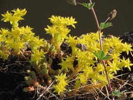 | 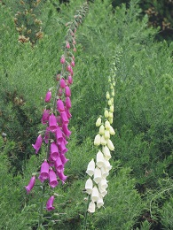 | 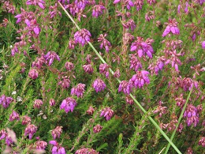 | ||
| 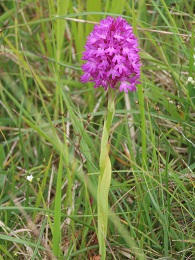 | 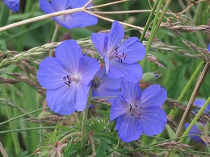 | 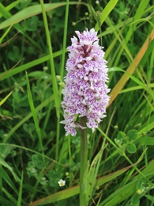 |
At UNL, in addition to work in my usual research area, this year I enjoyed starting new discussions with researchers in physics, computer science, and engineering, as part of a quantum science and engineering grant that began at the end of 2023. One of Mark's PhD students - Kaitlin - graduated in August. Several of our current and recent PhD students mentioned an interest in birdwatching, so we had two GST (the name of our research group, Groups-Semigroups-Topology) road trips in the spring to see the snow goose and sandhill crane migrations. Three of our current students - Audrey, Kathryn, and Petra - came to the conference in England and also joined us on a walk on public footpaths through the farms (and cows!) around Kenilworth Castle. In 2013 we took the same walk in Kenilworth with three of our PhD students at the time - Anisah, Ashley, and Melanie; the three of them also visited us in Lincoln during a conference earlier this year. Another former PhD student - David - visited UNL in October. Mark and I also traveled to San Diego this fall for a meeting, and very much appreciated seeing many friends and colleagues there after a several year hiatus. It's always wonderful to keep in touch and we look forward to more in 2025.
| 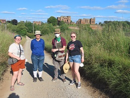 | 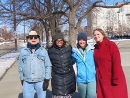 |
I can't resist also including some photos of neat wildlife we saw here in Nebraska, so here are photos of a greater prairie chicken doing its courtship display, a whooping crane family (the three white birds in back; the grey birds in front are sandhill cranes), and an eastern screech owl in our neighborhood.
| 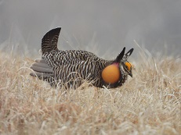 | 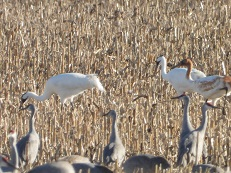 | 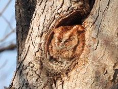 |
Happy new year to all of you! Mark and I wish you a wonderful year in 2025.
Susan